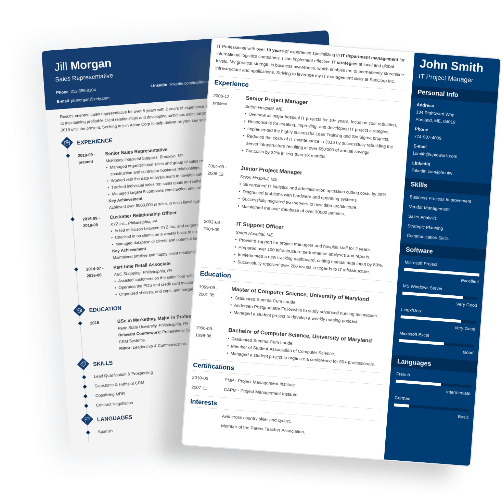

Chronological Resume
Lists work history in reverse order, starting with the most recent job. Best for steady careers.
Resu-Master empowers you to create a professional, ATS-optimized resume with ease. Stand out from the crowd and land the job you deserve.

Resumes Built
% ATS Pass Rate
Pro Templates
Happy Users
Get your professional resume in 3 easy steps
Enter your personal information, work experience, education, and skills using our smart form.
Pick from 50+ ATS-friendly, professionally designed resume templates that suit your style.
Preview your resume live, check your ATS score, and download as a perfect PDF instantly.
Whether you're a fresh graduate, career switcher, or executive — we have the perfect resume format for your unique journey.
Create My ResumeLists work history in reverse order, starting with the most recent job. Best for steady careers.
Detailed resume format designed for U.S. federal government job applications.
Comprehensive academic document detailing education, research, and publications.
Emphasizes skills and qualifications over chronological work history. Great for career changers.
Customized resume highlighting qualifications tailored for a specific job posting.
Blends skills and qualifications with chronological work history for maximum impact.
Professionally crafted for maximum recruiter impact

A touch of personality with well-organized resume structure — perfect for creatives.

A timeless layout that's spacious and symmetrical — ideal for corporate roles.

Open white-space template with excellent readability — great for academic roles.
Resu-Master is devoted to helping you land meaningful employment with the encouragement and support of career development experts, recruiters and certified professional resume writers.
Yes, you can begin using Resu-Master's builder for free. You can build, preview, and download your resume without any payment required.
Match your skills to the job description, quantify your achievements, use strong action verbs, and keep it concise. Our ATS scorer helps you optimize for each role.
The best template is the one that fits your field. Use our template gallery to filter by industry — Professional, Creative, or Academic.
Most recruiters recommend one page for early-career professionals. Two pages are acceptable for senior roles with 10+ years of experience.
A resume builder is an online tool that generates a professional resume in minutes. Resu-Master uses your job title and experience to suggest personalized content across all resume sections.
Read the job description carefully and match your skills to the required qualifications. Use a mix of hard skills (technical) and soft skills (communication, leadership) for balance.
Absolutely. A tailored resume is significantly more effective than a generic one. Our builder makes it easy to quickly adjust your resume for individual job postings.
"Resu-Master helped me land my dream job at Google. The ATS scoring told me exactly what was missing, and the live preview made it so easy to perfect my resume. Highly recommended!"
"I was skeptical at first, but the resume builder is incredibly intuitive. I had a professional resume ready in under 30 minutes. Got 3 interviews in my first week!"
"The templates are gorgeous and the PDF export is pixel-perfect. My resume finally looks as professional as my experience. Thank you, Resu-Master!"
"As a designer, I was picky about how my resume looks. Resu-Master's templates are stunning and the customization options are exactly what I needed. 10/10!"
"Switched careers from finance to marketing. The combination resume template was perfect for highlighting my transferable skills. Landed a senior role within 2 months!"
Join over 120,000 professionals who landed their dream jobs with Resu-Master.
Start Building Now — It's Free